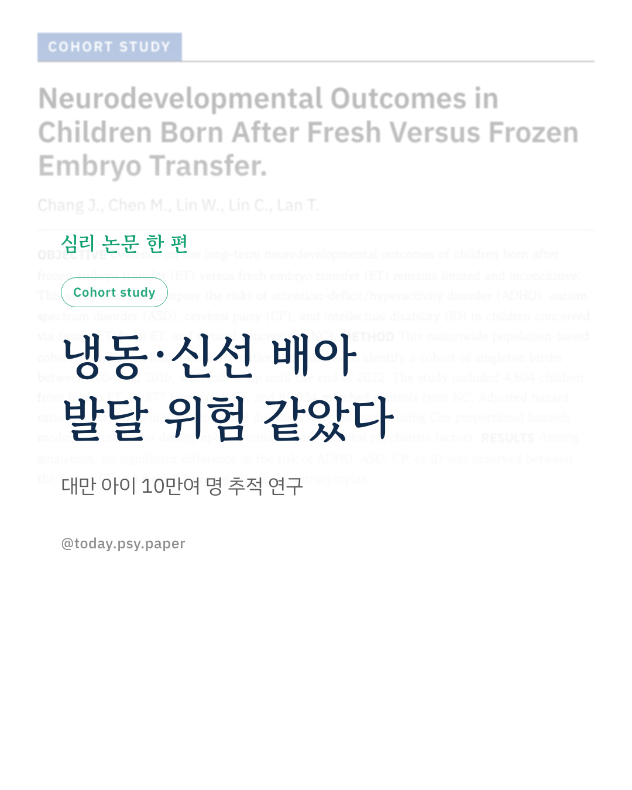
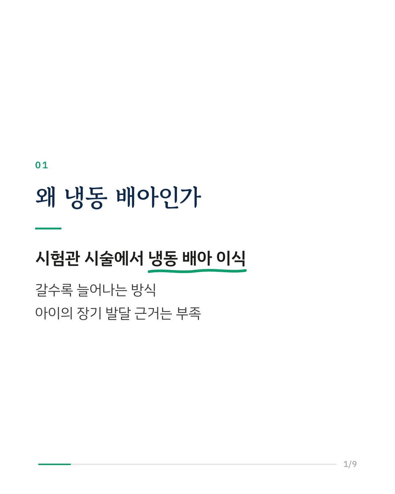
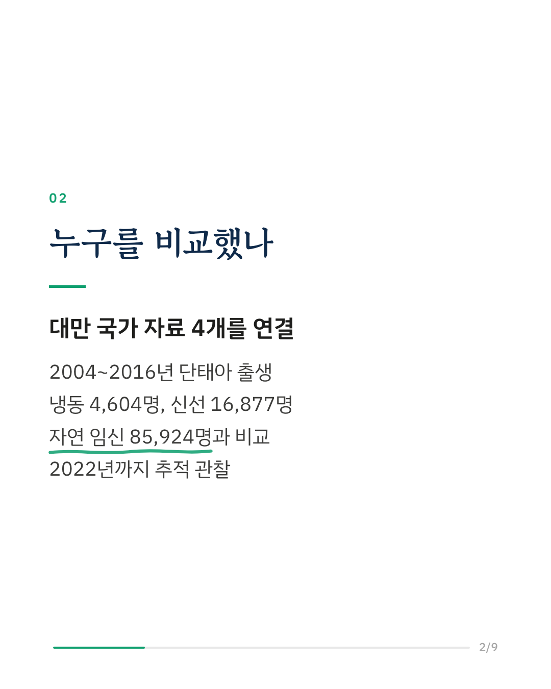
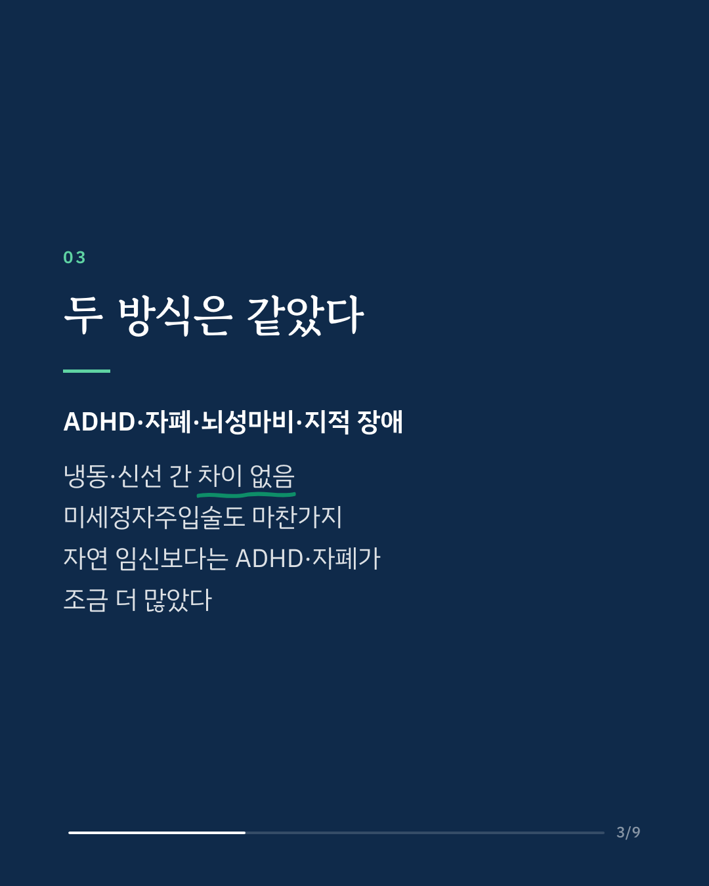
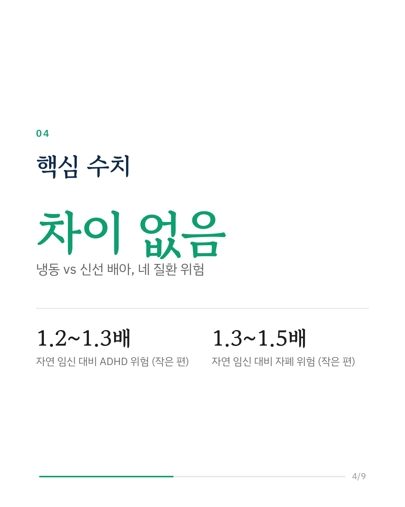
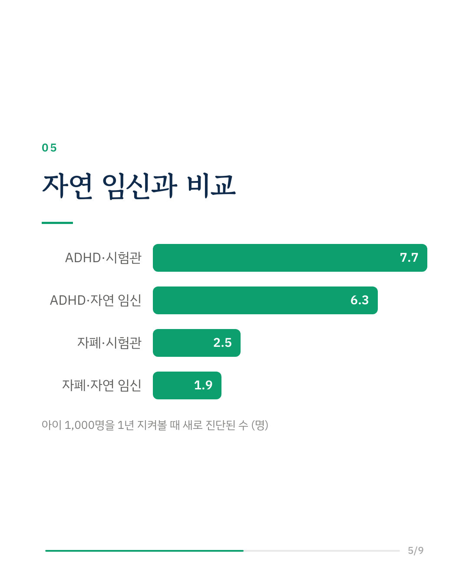
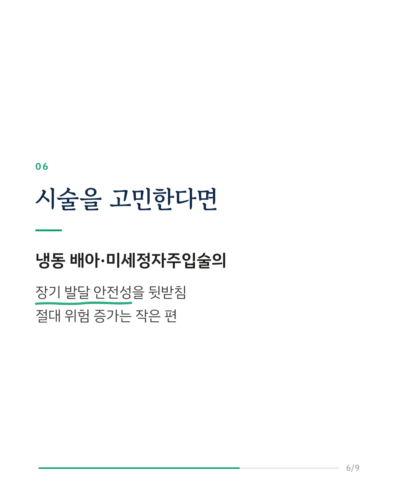
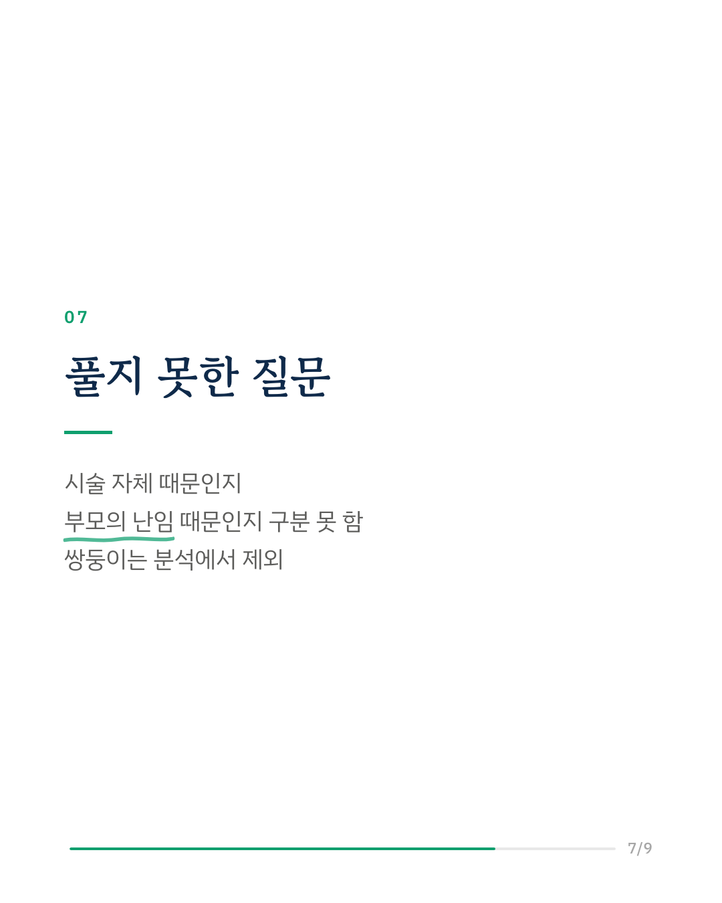
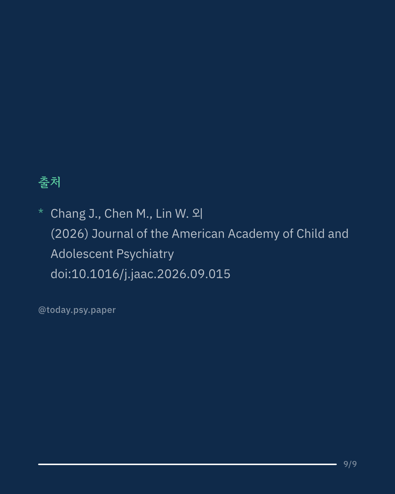

시험관 시술에서 냉동 배아 이식이 늘고 있지만, 이렇게 태어난 아이의 ADHD나 자폐 같은 장기 발달 결과는 근거가 부족했습니다. 대만 연구진은 국가 자료 4개를 연결해 2004~2016년에 태어난 단태아를 2022년까지 추적했습니다. 냉동 배아 4,604명, 신선 배아 16,877명, 자연 임신 85,924명을 비교했습니다. 냉동 배아와 신선 배아 사이에는 ADHD, 자폐 스펙트럼 장애, 뇌성마비, 지적 장애 위험 차이가 없었습니다. 미세정자주입술도 일반 체외수정보다 위험을 더하지 않았습니다. 다만 시험관 시술로 태어난 아이 전체는 자연 임신보다 ADHD 위험이 1.2~1.3배, 자폐 위험이 1.3~1.5배로 약간 높았습니다. 연구진은 절대 위험의 증가가 작아 시술을 고려하는 부모에게 안심할 만한 결과라고 봤습니다. 이 차이가 시술 자체 때문인지, 부모의 난임과 관련된 것인지는 이 연구로 구분할 수 없었습니다. Journal of the American Academy of Child and Adolescent Psychiatry (2026), 'Neurodevelopmental Outcomes in Children Born After Fresh Versus Frozen Embryo Transfer' DOI: 10.1016/j.jaac.2026.09.015 #시험관아기 #냉동배아 #난임 #자폐스펙트럼 #아동발달 #임상심리 #심리학연구 #논문리뷰
python3 publish.py 42815847